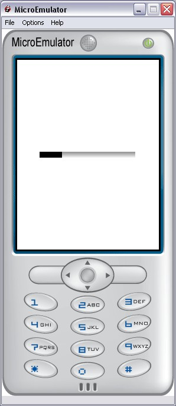

ProgressBar prototype

Introduction
Progress bar that display proportionnaly to the value of the step field.
The progress bar can also display in an "unknown step" mode where the progress bar
just bounces from left to right each time the step field is updated.
Interface
Fields description
Style fields
- MFString images - Background image
- SFVec2f size - Size of the area where the ProgressBar proto is displayed
- MFString style - Path to the CSS node associated to ProgressBar proto
Warning:
Define style is required (we can use the default style - see
Style node).
Exposed Fields:
- SFFloat step - Progress from 0 (0%) to 1 (100%), other values will force the unkown mode.
CSS
See also
ProgressBarMenu
Example